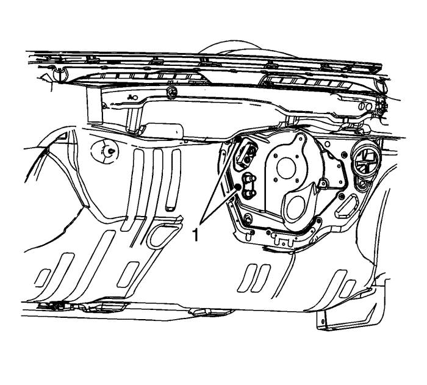
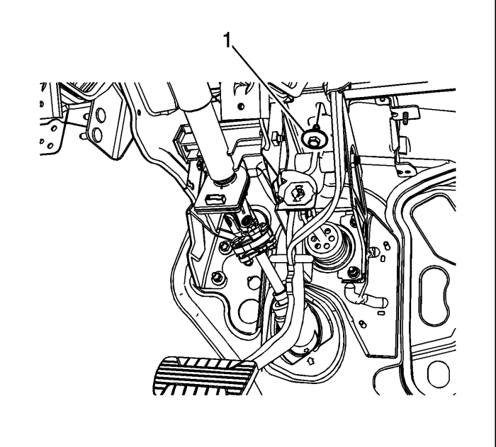
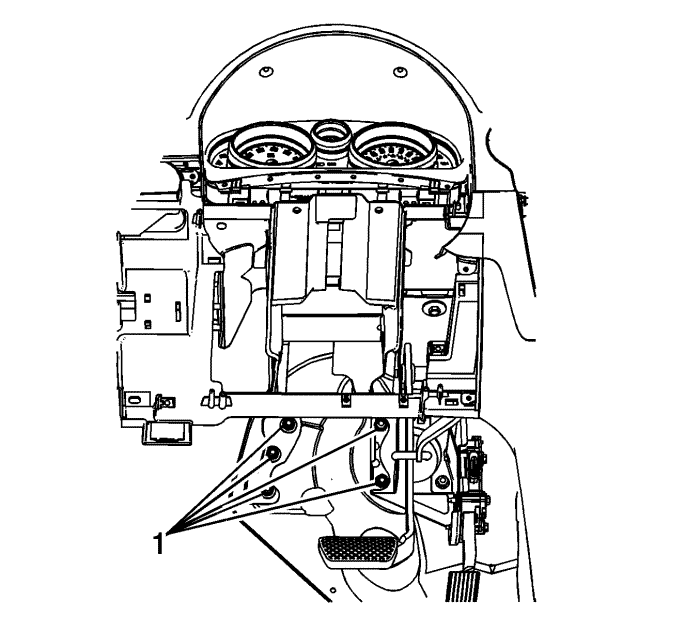
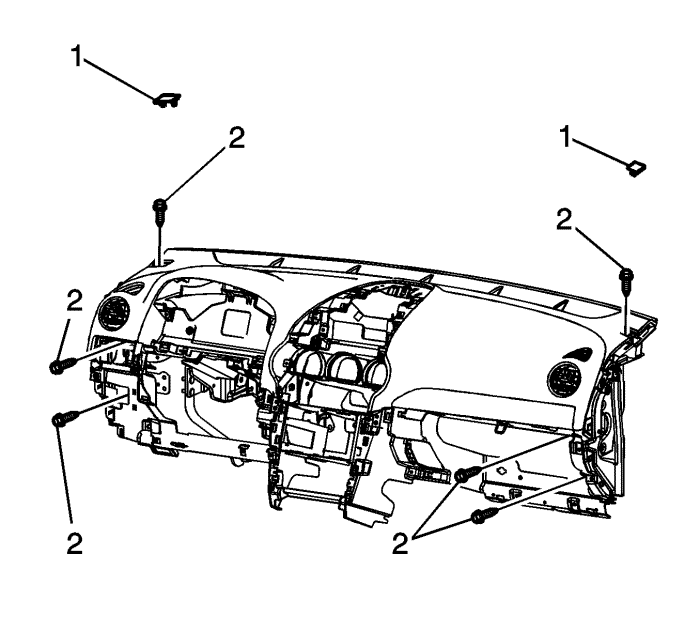

Sustitución del conjunto del panel de instrumentos — Carrocería corta
Procedimiento de desmontaje
Nota: En este procedimiento, se muestra un vehículo con el volante a la izquierda. Los vehículos con el volante a la derecha se reparan del mismo modo.
- Deshabilite el sistema SIR. Consultar Deshabilitación y habilitación del sistema de airbag (SIR). .
- Desconecte el cable negativo de la batería. Consultar Desconexión y conexión del cable negativo de la batería .
- Retire los tubos flexibles del calefactor del cuerpo del calefactor. Consultar Sustitución del tubo flexible de entrada del calefactor : Diesel → V6 → LE5 y Sustitución del tubo flexible de salida del calefactor : Diesel → V6 → LE5 .
- Retire las tuberías del aire acondicionado de la válvula de expansión térmica. Consultar Sustitución del tubo del evaporador del aire acondicionado y del condensador del aire acondicionado y Sustitución del tubo flexible de salida del evaporador : V6 → Diesel → L4 .

- Retire las tuercas (1) que fijan el módulo HVAC a la placa del modelo.
- Desmonte los asientos delanteros. Consultar Sustitución del asiento delantero - Cubo .
- Desmonte la consola delantera del piso. Consultar Sustitución de la consola de suelo delantera : Carrocería corta → Carrocería larga .
- Retire el conjunto del panel de extensión de la consola de suelo delantera. Consultar Sustitución del panel de extensión de la consola delantera del suelo : Carrocería corta → Carrocería larga .
- Retire el soporte de control del cambio. Consultar Sustitución del soporte de control del cambio .
- Retire las molduras de guarnecido del montante del parabrisas. Consultar Sustitución de la moldura de guarnecido del montante del parabrisas : Carrocería larga → Carrocería corta .
- Retire los seguros de la moqueta del suelo delantera. Consultar Sustitución del seguro de la moqueta del suelo de la abertura de la puerta lateral delantera : Carrocería larga → Carrocería corta .

- Retire el tornillo que une el soporte del pedal de freno a la barra de acoplamiento (1).
- Retire el conjunto de la columna de dirección. Consultar Sustitución de la columna de dirección .

- Retire las tuercas (1) que fijan la barra de acomplamiento del cuadro de instrumentos a la placa del modelo.
- Retire el conjunto del cuadro del panel de instrumentos. Consultar Sustitución del cuadro de instrumentos : Cuerpo largo → Cuerpo corto .
- Desmonte la radio Consultar Sustitución de la radio : Cuerpo corto → Cuerpo largo .
Nota: Anote la ubicación y la disposición del mazo de cables eléctrico antes de desembornarlo o retirarlo para garantizar que se vuelva a instalar correctamente.
- Desemborne las conexiones a masa y los enchufes del mazo de cables del panel de instrumentos en las siguientes ubicaciones.
| • | En los dos montantes del parabrisas |
| • | En los dos montantes "H" |
| • | En el soporte de la columna de dirección |
- Retire el centro eléctrico del panel de instrumentos. Consultar Sustitución del bloque de unión del mazo de cables del panel de instrumentos .

- Retire los recubrimientos de tornillo del panel de instrumentos (1).
- Desmonte los tornillos (2) del panel de instrumentos.
- Con la ayuda de un asistente, retire el conjunto del panel de instrumentos del vehículo.
- Una vez extraído el conjunto del vehículo, apóyelo adecuadamente para evitar que se dañe.
Procedimiento de montaje
Nota: El montaje del conjunto del panel de instrumentos en el vehículo requiere la intervención de 3 personas. Dos dentro del habitáculo y otro en el compartimento del motor.
- Las dos personas que estén dentro del habitáculo sujetarán el conjunto, mientras que lo alinean con el vehículo.
- Empuje lentamente el conjunto hacia delante mientras que la persona situada en el compartimento del motor mete los pernos de ubicación del módulo HVAC, los tubos del calefactor y la válvula de expansión térmica en las aberturas de la placa del modelo.
Precaución: Consulte Advertencia sobre los pernos en la sección Prólogo.
- Monte los tornillos del panel de instrumentos (2) y apriételos a 20 N·m (15 lib. pie).
- Monte los recubrimientos de tornillo del panel de instrumentos (1).
- Monte el centro eléctrico del panel de instrumentos. Consultar Sustitución del bloque de unión del mazo de cables del panel de instrumentos .
- Emborne las conexiones a masa y los conectores eléctricos del panel de instrumentos en las siguientes ubicaciones.
| • | En el soporte de la columna de dirección |
| • | En los dos montantes "H" |
| • | En los dos montantes del parabrisas |
- Monte la radio. Consultar Sustitución de la radio : Cuerpo corto → Cuerpo largo .
- Monte el conjunto del cuadro del panel de instrumentos. Consultar Sustitución del cuadro de instrumentos : Cuerpo largo → Cuerpo corto .
- Monte las tuercas que unen la barra de acoplamiento del panel de instrumentos a la placa del modelo (1) y apriételas a 25 N·m (18 lib. pie).
- Monte la columna de dirección. Consultar Sustitución de la columna de dirección .
- Monte el tornillo que une el soporte del pedal de freno a la barra de acoplamiento del panel de instrumentos (1) y apriételo a 25 N·m (18 lib. pie).
- Monte los seguros de la moqueta delantera. Consultar Sustitución del seguro de la moqueta del suelo de la abertura de la puerta lateral delantera : Carrocería larga → Carrocería corta .
- Monte las molduras de guarnecido del montante del parabrisas. Consultar Sustitución de la moldura de guarnecido del montante del parabrisas : Carrocería larga → Carrocería corta .
- Monte el soporte de control del cambio. Consultar Sustitución del soporte de control del cambio .
- Monte el conjunto del panel de extensión de la consola de suelo delantera. Consultar Sustitución del panel de extensión de la consola delantera del suelo : Carrocería corta → Carrocería larga .
- Monte la consola delantera del suelo. Consultar Sustitución de la consola de suelo delantera : Carrocería corta → Carrocería larga .
- Monte los asientos delanteros. Consultar Sustitución del asiento delantero - Cubo .
- Monte las tuercas del módulo HVAC (1) y apriételas a 4 N·m (35 lib. pulg.).
- Monte las tuberías del aire acondicionado en la válvula de expansión térmica. Consultar Sustitución del tubo del evaporador del aire acondicionado y del condensador del aire acondicionado y Sustitución del tubo flexible de salida del evaporador : V6 → Diesel → L4 .
- Monte los tubos flexibles del calefactor en el cuerpo del calefactor. Consultar Sustitución del tubo flexible de entrada del calefactor : Diesel → V6 → LE5 y Sustitución del tubo flexible de salida del calefactor : Diesel → V6 → LE5 .
- Conecte el cable negativo de la batería. Consultar Desconexión y conexión del cable negativo de la batería .
- Activar el sistema SIR. Consultar Deshabilitación y habilitación del sistema de airbag (SIR). .
- Vuelva a programar el sistema HVAC, la radio y el módulo de control de la carrocería. Consultar Referencias del módulo de control .
| © Copyright Chevrolet Europe. All rights reserved |